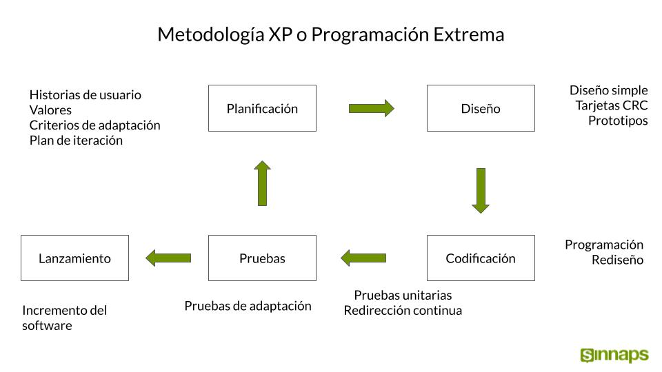

¿Que es la metodologia Extreme Programming?

Es un método ágil creado a finales de los 90' para el desarrollo de software
se trata de una metodología cuyo objetivo es crear sistemas de alta calidad,
basados en una estrecha interacción con los clientes, pruebas constantes y
ciclos de desarrollo cortos
Caracteristicas
Su objetivo es desarrollar y gestionar proyectos con eficiencia, flexibilidad
y control, se basa en la comunicación, reutilización del código desarrollado y
realimentación
Ventajas
Menos errores gracias a la programación en pareja
Ausencia de horas extra, gestión propia del tiempo
Aplicación rápida de cambios
Desventajas
Relativamente caro
Requiere control de versiones
Requiere autodisciplina en la aplicación